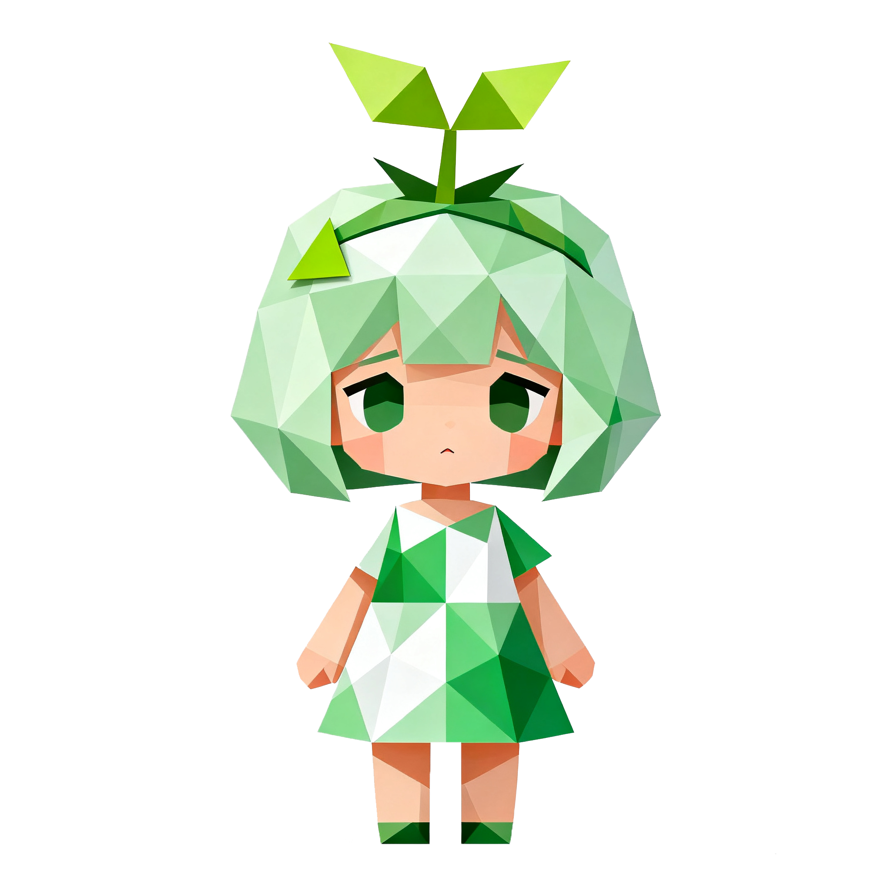
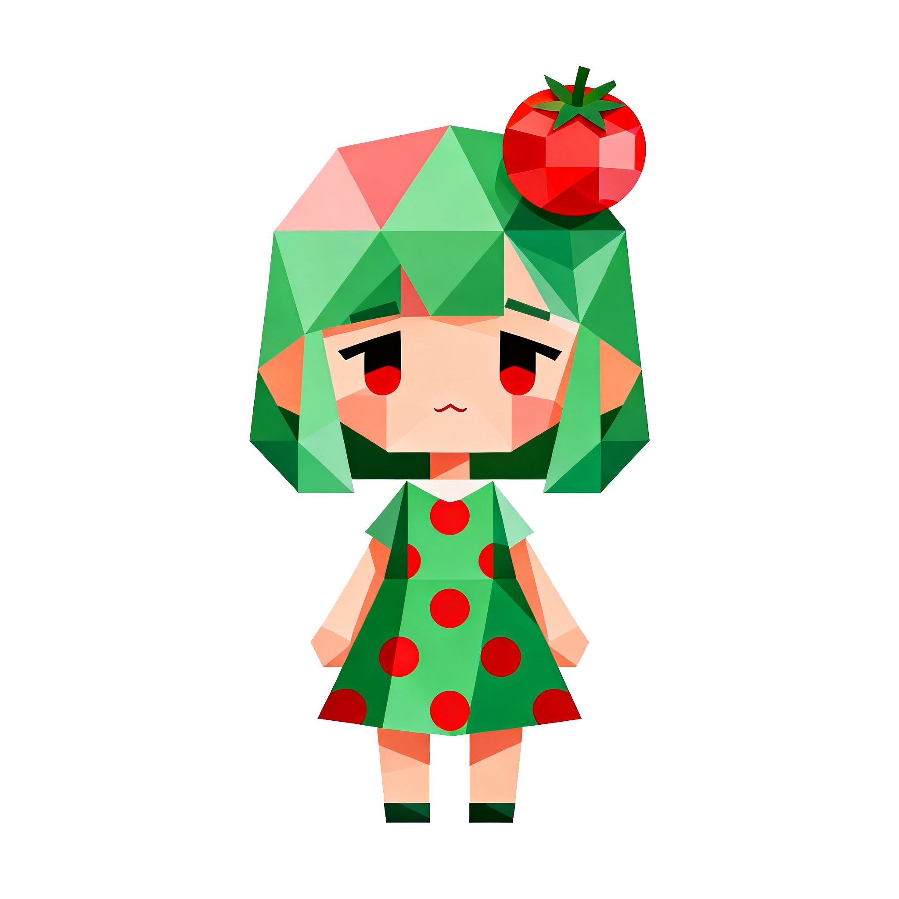
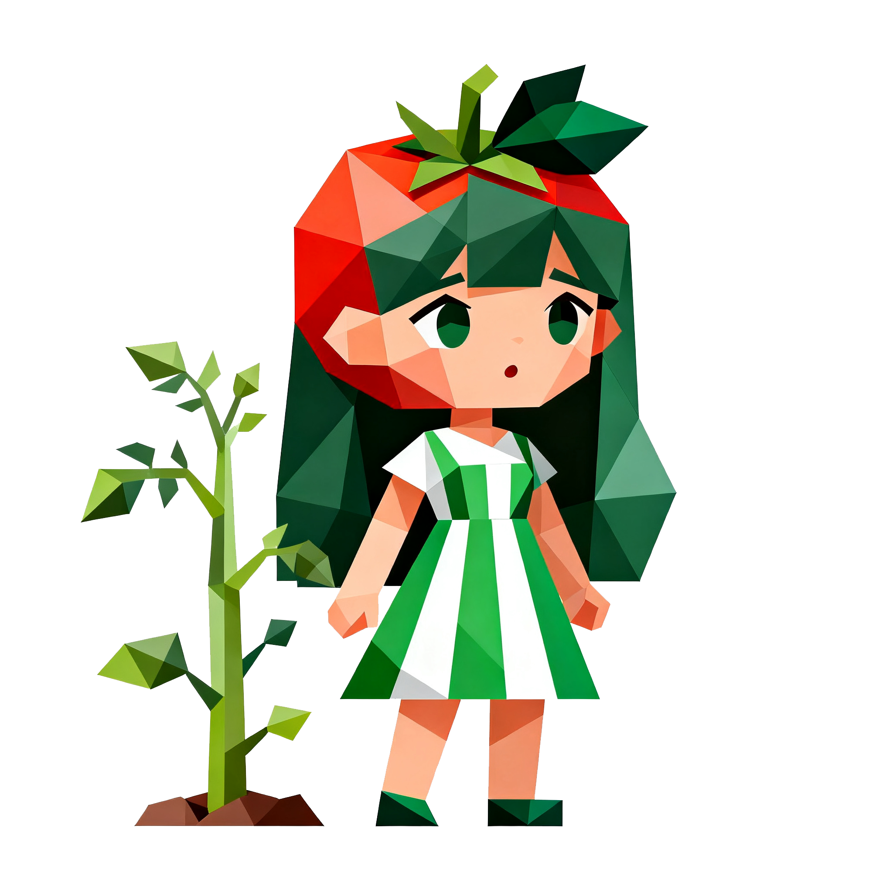
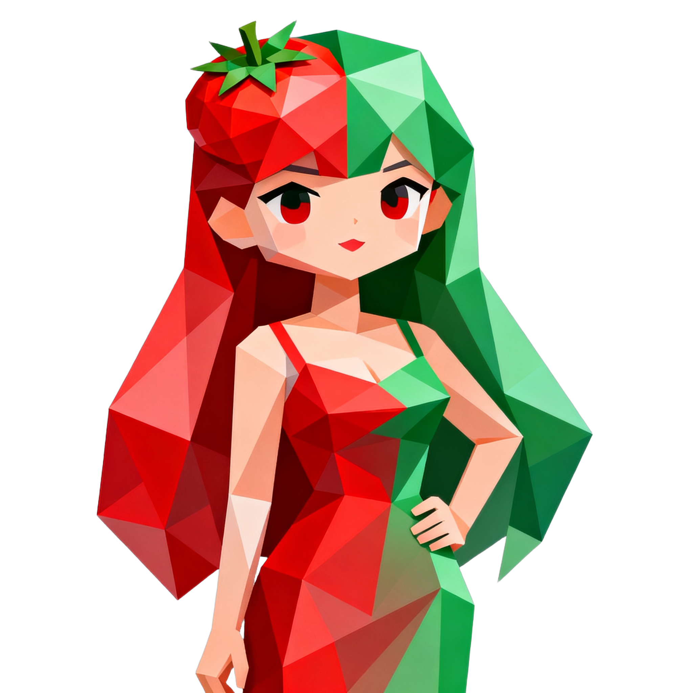
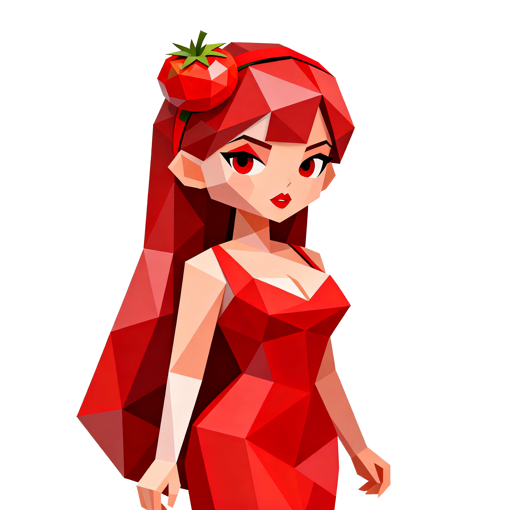

番茄钟主页
历史记录
计划
☰
🏠
番茄钟主页
📝
计划
📚
历史记录
⚙️
番茄钟++
25:00
模式A: 单番茄钟 (1/1)
开始专注
重置
今日已完成:
0
个番茄钟
快捷键: 空格键 - 开始/暂停, R键 - 重置
我的植物园
选择植物:
🍅 番茄 (25分钟)
🥕 胡萝卜 (15分钟)
🥦 西兰花 (20分钟)
🍆 茄子 (30分钟)
🌽 玉米 (35分钟)
🍉 西瓜 (45分钟)
🍓 草莓 (10分钟)
🫑 辣椒 (18分钟)
🍅
番茄
成熟时间: 25分钟





成长进度:
0
%
已累积:
0
/
25
分钟
收获植物！
我的植物收藏柜
已完成番茄钟记录
暂无历史记录，完成番茄钟后将会显示在这里
清空历史记录
学习计划
添加
暂无计划，添加您的学习计划
时间设置
模式A: 单番茄钟
模式B: 循环多番茄钟
模式C: 自定义番茄钟
番茄钟时长 (分钟)
设置单个番茄钟的工作时长
番茄钟时长 (分钟)
番茄钟个数
休息时间 (分钟)
每个番茄钟之间的休息时间
番茄钟个数
番茄钟时长 (分钟)
输入每个番茄钟的时长，用逗号分隔，例如: 25,30,20
休息时间 (分钟)
输入每个休息时长，用逗号分隔，例如: 5,10 (个数比番茄钟少1)
取消
保存
应用已最小化到系统托盘